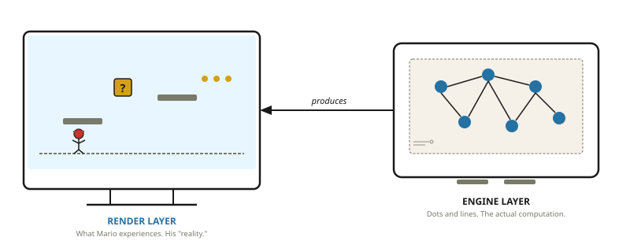
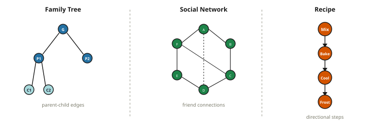
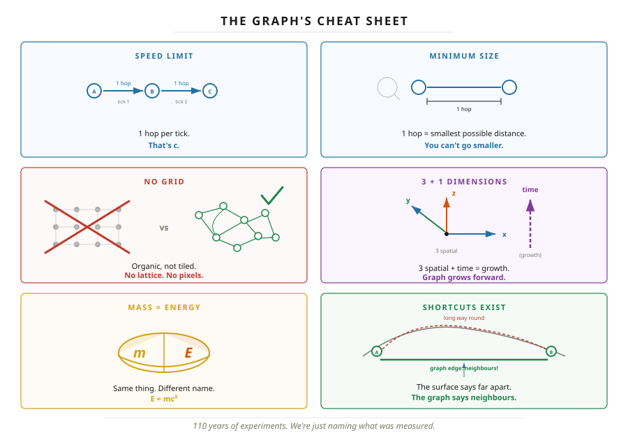
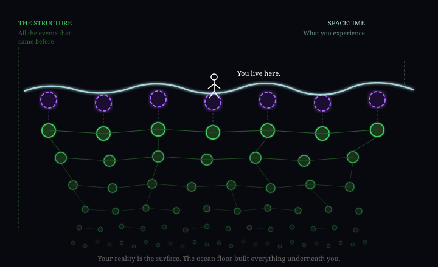
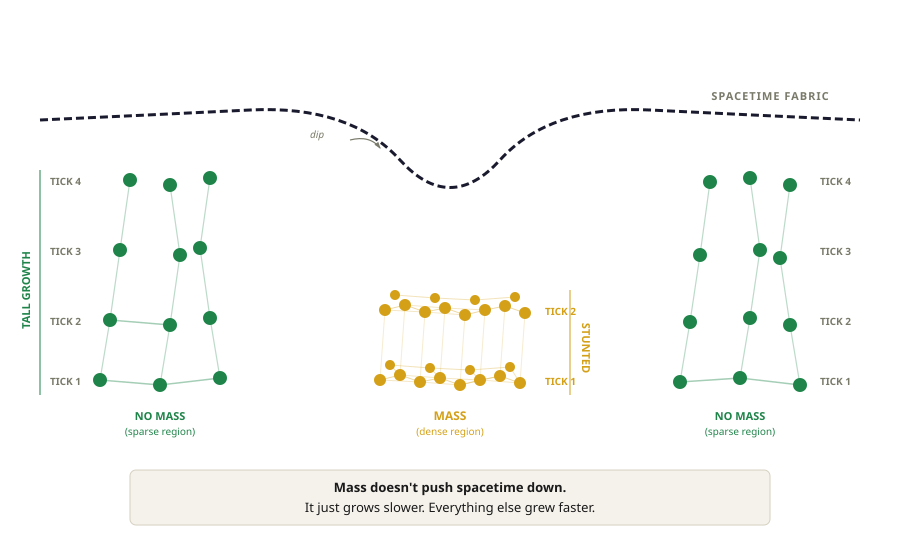
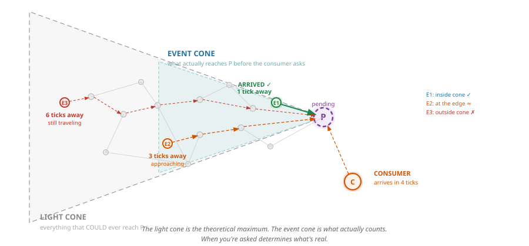

When someone asks if I have any hobbies, this is it. On the surface this will seem odd, to “ponder the universe” as a hobby.
But I’d argue it’s actually a well-known fact that the best way to spend ANY amount of time on ANY amount of drugs is to sit back and go “YO BUT what IF LIKE…”
Now as a warning. I have the type of intelligence that seemingly evaded every test it ever came across.
But to quote Good Will Hunting, “I can’t paint you a picture, I can’t hit the ball out of Fenway, and I can’t play the piano, but when it comes to wild imaginative theories on a subject I hardly know... I could always just play.”
I would imagine having a passion for a subject you can’t fully grasp is all that is really needed for the seeds of AI psychosis to truly take hold.
But this special little “hobby” of mine started because I was curious if anything is truly “random”. 9 years and a lot of PBS SpaceTime, here we are.
Now, I KNOW the odds that someone gets committed rise significantly the moment they start saying “I have a theory of the universe.”
So to get ahead of whoever plotted to get Kanye — here’s what this actually is.
This is my best guess on how it could all work. The odds any of this is right are about as close to zero as something can be. But if even one concept inspires a thought in someone more capable, even if born out of pure opposition, then I’d consider that a win.
At the very least, having a link to this on the World Wide Web makes it easy to send an advanced briefing for any dinner party I should be expected to attend in the future.
Cheers,
A Very Serious Person (Greg)
The foundation here draws heavily from causal set theory, Wolfram’s project, and loop quantum gravity. If this piques your interest, start with those. They have the math we don’t.
Chapter 1: You Are Mario
Alright let’s go. So all you need to know is physics has two main theories. General relativity describes the big stuff, quantum mechanics the small stuff. It’s very similar to East and West coast rap in the 90s. Both are great in their own respects but they are forcing us to pick a side.
So in our best effort to sit everyone down and ask, “can’t
we all just get along?”, we have to accept something that at first
might sound a little bit crazy... and that is... “It WAS ALL a
Dream screen”
You are Mario. Not metaphorically. Your reality is taking place on a screen. There is a structure underneath that represents your world, and you have no direct access to it. But don’t worry, there could be worse things than life as an Italian 2D plumber.
This sounds strange. But you deal with two-layer systems every day. Your monitor shows letters. Your computer stores ones and zeros. The letters are real — you’re reading them right now. But what’s actually stored looks nothing like what you see.
We’re saying reality works the same way. What you experience — solid objects, a handful of rice, a gulp of water — is produced by something underneath that you cannot see and have never touched. The point you need to get is there are layers to this shit.

Now here’s what makes this more than a fun idea. When you accept that reality has two layers, a whole list of genuinely weird things stop being weird. Things like:
- Why can’t anything travel faster than light? Every other speed limit has a reason. This one just... is.
- Why can’t you shield gravity? Got radiation? Lead stops it. Electromagnetic field bothering you? Faraday cage. Gravity? Nothing. Nobody has ever shielded gravity. Not once.
- Why does looking at something change it? Not touching it. Not bumping it. Just looking.
- Why do two particles on opposite sides of the universe give correlated answers instantly?
- Why does time slow down near a black hole? Yes — this is real. Your phone corrects for this every single day or your GPS would be wrong by 10 kilometers.
- At what age can a man know for sure that he won’t go bald?
So let’s try and explain this. If we roll with the idea you are Mario and there is another layer? What “IS”, this other layer?
The other layer is a graph. A graph is just dots connected by lines. You already know graphs.

Now let’s go make some graphic content and create the freaking universe!
Chapter 2: You Already Live in One
Okay so here is the twist. On some level you already accepted this whole “layers” to reality idea. You just didn’t quite call it that. But what do you think spacetime is? Look up any textbook and you will see fabric being warped... can you see this fabric? Can you see the warping? The answer is... (drumroll)...no.
You might never have thought about it, but what IS spacetime? This is a quote from John Archibald Wheeler, the physicist who named black holes and gave us the most famous summary of Einstein’s theory:
“Matter tells spacetime how to curve, and spacetime tells matter how to move.”
Beautiful sentence. Now what THE FUCK does that even mean? It tells you what spacetime does. It doesn’t tell you what spacetime is.
Well it’s a graph. When they do math on spacetime they actually treat it as a graph, it’s a specific type of graph called a manifold. So tada, this graph nonsense does not seem so hopeless. It’s worth noting that there are major theories and projects that treat the universe as a graph so this idea is taken seriously in some circles.
Okay so if our logic tracks and spacetime is a graph, and we have been researching it for 110 years now... let’s cheat a little bit and see what the research tells us our graph MUST look like.
Speed limit. Nothing travels faster than one hop per tick. That is the speed of light — not because there’s a cosmic speed enforcer, but because there’s no mechanism to skip a connection. You can’t jump three edges in one tick any more than you can skip three steps on a staircase in one step.
3+1 dimensions. Three dimensions of space plus one of time. Time is the growth direction — new nodes being born. Not a fourth spatial axis.
Mass equals energy. A self-perpetuating topology. Call it mass when you weigh it. Call it energy when you release it. Same thing, different name.
Shortcuts exist. Two points that look far apart on the surface might be direct neighbours in the graph. The surface says “far apart.” The graph says “one hop.” This matters. A lot.

The Rules
Now I want to focus on the rules for how this graph can change. You already live in a world with rules. Hardcoded, unbreakable, non-negotiable rules. Nothing in this universe travels faster than 299,792,458 m/s. Every action has an equal and opposite reaction. These aren’t suggestions. These are laws that have never been broken once in the history of the universe. You just don’t question them because you grew up with them.
So the idea that a graph has rules should not be controversial. You’re already living under a set of them. I’d just like to propose fewer rules — and that some of the properties and constants we measure are emergent from a simpler set underneath. These rules are really just a fancy way of saying: past events sum together to make new events. Basic cause and effect.
The nodes are events. Not points in space — events in spacetime. A thing that happened, at a place, at a time. You can’t separate the where from the when. The edges are operations — the connections carry the math that generates the next event. Summing all operations to any node gives us the next layer of reality. Your position gives rise to properties — just like in a family tree, where we don’t store “parent” on a dot, we look at who’s underneath it. The lines point forward, the graph grows — cause and effect, past to future. Time moves on.
The main thing is your reality takes place at the edge. You can imagine an ocean of events that lead you to your “now”, and your experience is always on the surface.

So what the hell is gravity?
Three clues that something is off about gravity:
- You can shield every other force. Radiation — slap some lead on that bitch. Electromagnetic fields — get your ass in a Faraday cage. Gravity — nothing. Not once, anywhere, ever.
- Einstein showed gravity and acceleration are identical. Standing on Earth feels exactly the same as accelerating in a rocket at 9.8 m/s². Why would a force feel the same as motion?
- Physicists have hunted the graviton — the particle that carries the gravitational force — for nearly a hundred years. Never found one.
Three clues. One answer. But to get there, we need to get the order of operations right. Because almost every explanation of gravity you’ve ever heard gets it backwards.
To start, we need to explain mass. Remember we said our graph is events. That means whenever you try and think of an object like “a star” or “a photon”, none of that exists in our graph as a single point.
Mass, objects, particles — all the result of stable configurations within the graph. A collection of events that join together and form a specific shape. When we go to build the next layer of reality, to move from current now to future now, we sum all of those events. And for mass — when you sum all the operations together — it just generates the same shape again. That’s it. Mass is a self-perpetuating topology.
Your boss pays you $1000 (event 1), your landlord charges you $1000 (event 2). Those sum together so you were poor then, and you are poor now. Two events resulting in a stable configuration where you forever remain poor. If those events happen again in the next now, you have a self-perpetuating topology of poverty.
Now here is where it gets interesting. The fastest anything can travel in the graph is one hop at a time — the speed of light. And the speed of light has NOTHING to do with light, it’s just the fastest our graph is capable of change. So our perception of time is really the rate of change occurring in our local region of the graph.
If mass is a stable configuration, it means in order to get the NEXT state, we have to sum all of its edges. If we can only do one hop at a time — at the speed of light — then it takes longer to create the next “now” in that region of the graph. Dense regions process slowly. Sparse regions fly.
Now pay attention here because this is the order that matters. This is the sequence that gets gravity right:
Step 1: Density causes time dilation. Dense regions have more edges to process per tick. It takes longer to compute the next “now.” Time literally runs slower. This isn’t theoretical — GPS satellites orbit where Earth’s graph is less dense. Their clocks run faster than yours by 45 microseconds per day. Your phone corrects for this every single day or your location would drift 10 km. Time dilation is the first thing that happens. It comes directly from density.
Step 2: Time dilation causes curvature. If time runs slower in one region and faster in another, the spacetime surface grows unevenly. The sparse regions race ahead. The dense regions lag behind. That uneven growth IS the curvature of spacetime. Not a metaphor — that is literally what curvature means. The surface is lopsided because the graph underneath it didn’t grow at the same rate everywhere.
Step 3: Gravity emerges from the curvature. Objects on a curved surface follow the natural geometry — the cheapest path. That path curves toward the slow-growing region. That curve is what we call gravity.
This order is everything. Mass does not pull things toward it. Mass does not cause gravity directly. Mass is dense topology. Dense topology causes time dilation. Time dilation causes uneven growth. Uneven growth IS curvature. And gravity emerges from that curvature. It’s a chain reaction — and gravity is the LAST thing in the chain, not the first.

Think about what “mass warps spacetime” actually means in our graph. It’s not that mass is pushing spacetime down like a bowling ball on a trampoline. That’s the textbook picture but it’s backwards. Imagine a field of grass growing. In the open, the grass grows fast — three, four new inches a week. But there are rocks scattered across the field. Under the rocks, the grass barely grows at all. Zoom out after a month. The open areas are tall and lush. The areas around the rocks are short. It LOOKS like the rocks created dips — like the field is warped around them. But the rocks didn’t push anything down. The grass under them just never grew. The “warping” is really just uneven growth.
That’s what mass does to the graph. The dense region takes longer to compute the next “now.” Meanwhile the sparse regions around it are flying through their ticks, racing ahead. The difference in growth rate IS the curvature. Mass doesn’t warp spacetime. Mass is slow spacetime. Everything else just grew faster.

Once you have curvature, objects follow the cheapest path through it — the path that requires the least computation to traverse. That path curves toward the dense region. That curve is gravity.

Sounds like crazy pills again right? But this idea of minimizing work is actually an established thing in physics. It’s called the principle of least action — light, everything, will ALWAYS take the most efficient path in the universe. When we shine light into water, it bends at exactly the angle that minimizes travel time. Every fucking time. Instantly. This is freaky as fuck but somehow our universe IS maintaining the most efficient path. So what we are proposing is not as crazy as it might sound.
Now let’s go back to our clues.
Why you can’t shield gravity: Gravity isn’t a signal you can block — it emerges from the growth differential of the graph. Adding a shield adds more mass, more density, which changes the differential. Every attempt to block gravity adds to the chain that produces it. Like trying to put out a fire with gasoline.
Why gravity equals acceleration: Both are being forced off the cheapest path. When you stand on Earth, the ground stops you from following the natural curve of spacetime. When you’re in a rocket, the engine forces you off the cheapest path. The graph doesn’t care why you’re being pushed off — the experience is identical because the mechanism is identical. And here’s the thing — in free fall, you feel NOTHING. No force. Astronauts float. You only “feel” gravity when something prevents you from following the geometry. The “pull” you feel isn’t gravity pulling you down. It’s the floor pushing you up.
Why there’s no graviton: “What particle carries gravity?” is like asking “what particle carries the shape of a triangle?” Gravity isn’t a force being transmitted. It’s geometry that emerges from uneven growth. There is no particle. There never was.
Gravity is not a force. It is not something mass does to space. It is what EMERGES when the graph grows unevenly. Dense topology → time dilation → uneven growth → curvature → gravity. Mass doesn’t pull. The surface is just lopsided. And everything follows the cheapest path down the slope.
Chapter 3: There is no random.
Everything so far has been setup. This is what it was building to.
Remember the question that started all of this? Is anything truly random? Nine years ago that question bugged me enough to look into it and I ended up here. So this is where I finally give you my answer.
A Node Is Born
Remember that our graph is events, not things, not objects, not particles. Events. That means we need to record every event as it happens. And we said that reality is the sum of all the events that came before it.
But here’s the problem. Not all events arrive at the same time. Some events are close. Some are still traveling through the graph at the speed of light. And the next layer of reality has to be the sum of all the events that came before it — so if an event is on its way and WILL arrive in time, the node has to wait for it. It can’t produce the next layer yet. It would be wrong.
Let me show you what this looks like.
Your brother is expecting a baby today. You’re driving to a family function. You know — with absolute certainty — that someone at this function is going to ask: “are you an uncle yet?”
Right now, driving in, what’s the answer?
It’s not yes. It’s not no. It’s... probably? Maybe? Your brother hasn’t called yet. The baby might already be born and you just don’t know. Or the baby might not come until tomorrow. You are genuinely in a state where the answer does not exist yet — not because you’re hiding it, not because you’re confused, but because the event that determines the answer hasn’t reached you.
Now: will they ask before your brother calls? Or will he call before they ask?
If he calls first — “it’s a girl!” — and THEN your aunt asks, the answer is yes. You’re an uncle. Committed. Done.
If your aunt asks first — before the call comes — you have to give an answer with whatever you’ve got. “Not yet, as far as I know.” Different answer. Same you. Same family function. Different timing.
That right there is the whole thing. You are the node. The baby being born is an event traveling toward you. Your aunt asking is the consumer — the thing that forces you to commit to an answer. And the answer you give depends entirely on which events reach you before she asks.
Now here is where it gets interesting. Physicists have been studying this “waiting” state for a hundred years. At the really small scale — individual particles, single photons — this state of “pending” shows up in our reality as something very specific. A wave. Physicists call it the probability wave, and it caused an absolute shitstorm that is still raging today.
The argument is about whether this wave represents something truly random, or whether there’s something underneath determining the outcome.
Now here’s the thing — the big dog Einstein did not like this idea of random very much. So like a proper 90s west coast rapper, he got in the booth and dropped the bar “God does not play dice.” The east coast responded. Bell proved that there are no local hidden variables — no secret answer sheet determining outcomes in advance. The physics world sided with Bell. Random won.
But hold on. “No hidden variables” doesn’t mean “no explanation.” It means the answer isn’t pre-written on the node. We agree. The node doesn’t carry a hidden value. What we’re saying is the events are on their way through the graph, and the answer is determined by which ones arrive before commitment. That’s not a hidden variable — that’s a structure you can’t see because you’re inside it.
The Event Cone
You may have heard of the light cone — all events that could ever reach you given the speed of light. Your entire possible past.
We’re introducing a new concept. The event cone. It’s narrower. It’s not everything that could reach you — it’s everything that reaches you before you’re forced to commit.
Of this whole article this might be the only semi novel contribution I actually have — and I am sure if I dig into it the idea won’t be mine or it will be wrong.
Your aunt asking “are you an uncle?” — that’s the thing forcing commitment. Everything that reaches you before she asks — your brother’s call, a text from your mum, your sister posting on Instagram — that’s your event cone. The events that actually count.
Same node. Consumer arrives early — small event cone, fewer inputs, one result. Consumer arrives late — larger event cone, more inputs, different result. Same dot in the graph. Different timing. Different reality.

The event cone is narrower than the light cone. It’s not what could reach you — it’s what reaches you before you’re forced to answer. When you’re asked determines what counts.
The Experiment That Started A Gang War
So there is this very famous experiment that started this whole gang war. I highly suggest you check out the PBS SpaceTime content on it for the full breakdown.
But before we get into the experiment, we need to connect something back to our model. We said every change in the universe is an event. Every path, every interaction, every tick — an event in the graph. And we said the graph IS reality. There is no backstage. No hidden layer that doesn’t count. If something is in the graph, it shows up in reality.
So what happens when a node is pending? It’s in the graph. It’s real. But it hasn’t been forced to commit. It doesn’t have an answer yet — it has a probability of what its answer COULD be. That state has to show up as something. And it does. It shows up as a wave.
The wave is real. It’s not a metaphor. It’s not a mathematical trick. It’s what pending nodes look like in reality. Remember you on the way to the family event — you’re not in some limbo dimension. You’re in the car, you’re real, you exist. But your uncle status is genuinely undetermined. Not because you’re missing information. Because the event that determines the answer hasn’t reached you yet. If someone looked at your “uncle status” right now, they’d see a probability. A wave.
A photon leaving a source and heading toward two slits — nothing has asked it to commit. So it propagates as a wave. It goes through both slits. Not because it’s magic. Because that’s what pending looks like. The events accumulate, propagate, interfere with each other — all while pending.
Then the screen says “what are you.” The node sums everything in its event cone — all the accumulated events from both paths, the whole wave — and commits. One dot. One position. Done. Repeat this a hundred times and the positions form bands — an interference pattern — because each dot’s position was calculated from the sum of both paths.
But if someone checks which slit BEFORE the screen asks — that check is a consumer. It forces the node to commit to a path early. Now the screen only gets one path’s worth of inputs. The sum is different. The dot lands somewhere different. Repeat a hundred times — no bands. No pattern.
So the interference pattern isn’t some spooky wave-particle duality. It’s the mathematical consequence of how many events were in the node’s event cone when it committed. More inputs, both paths — interference. Fewer inputs, one path — no interference.
Now. How do we know the wave isn’t random?
Let’s explain it with basketball first then break it down.
Imagine shooting a basketball on a court. Simple enough. Now imagine you found out that when you close your eyes... the basketball stops being a basketball, becomes a wave and goes into both nets on the court. That is the double slit experiment.
It gets weird. You decide you want to see this wave so you are smart. You close your eyes, fire your shot... and right when you hear it go in the net you open your eyes to see it go into both nets... except this time... it was a basketball the whole time. The universe somehow knew you would peak. Every time you close your eyes, back to weird wave ball. Decide you are going to open your eyes at ANY point even after the ball goes through the net... it knew you would check.
It gets even stranger. Let’s say you have a twin brother. You think you are going crazy so you send him to a different basketball court with specific instructions. You are going to shoot your ball first, and then after that he will shoot his ball. You both decide you will record the whole thing on video. You will keep your eyes open but your brother is going to keep his eyes closed the whole time. It’s okay you have his on video.
Now before you watch your brother’s video, you think... let’s just see what happens if I delete HALF the footage. It’s done forever no one ever saw it.
Now what happens? Well when you look at the shots where you kept your brother’s video — everything is normal. Your shots are scattered randomly. But when you look at JUST the shots where you deleted your brother’s footage... your balls — the ones that already landed, already recorded, already done — they show a pattern of where they landed on the ground. Bands. A distribution that shouldn’t be there. Your balls never moved. But the pattern was always hiding in your results. Deleting your brother’s footage is what told you which shots to look at.
That’s how we know it’s not random. If the dot positions were truly random, it wouldn’t matter what you do with your brother’s footage. Delete it, keep it — random is random. You can’t sort random data by an unrelated variable and find structure. But you can. Every time. Which means the positions were never random. They were determined by the sum of events in the event cone. The correlation with the twin was baked into the graph at the shared causal ancestor. The twin’s footage is just the key that lets you see the structure that was always there. Randomness can’t be sorted into a pattern. Determinism hiding inside a larger graph can.
For everyone who thinks religion or the “we are all connected” stuff is trippy — I dare you to try a microdose of this experiment.
The most confusing experiment in physics is sorting a spreadsheet.
That’s the basketball version. The real experiment is called the double-slit experiment, and the escalations are called the delayed-choice experiment and the quantum eraser. Instead of basketballs, they use photons. Instead of nets, two slits in a barrier. Instead of where the ball lands in the net, dots on a screen. Instead of twins, entangled particles created from the same crystal. Instead of deleting video, sending the twin to a detector that scrambles which-path information. Everything else is the same. The results are the same. And nobody can fully explain why.
The quantum eraser doesn’t change the past. The dots on the screen are committed and never move. But each photon has a twin, and they share a common origin in the graph — a common causal ancestor. Their outcomes were always correlated. How the twin commits determines which subset of dots reveals a pattern. The pattern was always there, hidden in the correlations. The twin’s measurement is the sorting key. Nothing was erased. Nothing went backwards. The graph knew from the start.
This is, to me, the single strongest piece of evidence that something like this model is going on. Because the quantum eraser makes perfect, obvious, boring sense if reality is a graph where entangled nodes share causal ancestry. And it makes absolutely no sense otherwise.
Quantum mechanics is not spooky. It is not random. It is a node that hasn’t been asked yet — events still on their way through the graph. The moment something needs its value, it commits, and it was always going to give exactly that answer. You just couldn’t see it coming because you’re inside the graph.
Wild Guesses
If the framework is right — or even close — it might hint at some open questions. These are guesses. Enjoyable ones, but guesses.
The Standard Model as a topology catalogue. If particles are stable loops, the particle zoo might be a complete catalogue of loop structures the graph can sustain. Only certain topologies are self-reinforcing. The rest decay.
Dark matter as a topology without a consumer. What if dark matter is a self-perpetuating topology that never adjoins with the visible graph? It has internal structure — mass — so it exerts routing pressure — gravitational effect. But it never commits into the layer we can detect. Not invisible matter. Matter that exists in the graph but has no consumer in our region. This would explain why dark matter has gravitational effects but no electromagnetic interaction, no direct detection, no visible output.
Dark energy as frontier pressure. The graph keeps growing. New nodes create new places for newer nodes. The routing pressure at the expanding frontier — the tendency of the graph to propagate outward — might be what we’re measuring as dark energy. Not a force. Just the graph growing, with the edges always being the last place anything committed.
Entanglement. Two particles share a common causal ancestor. They separate. Both pending. When one commits, it traces back through shared history. The other does the same — same root, complementary values. Sealed envelopes from the same deck. No signal. No faster-than-light communication.
Tunneling. Shortcuts exist. Two nodes that look “far apart” on the surface might be direct neighbours in the actual graph, connected by an edge that doesn’t follow the emergent geometry. The particle doesn’t go through the wall — it takes a path the wall doesn’t cover.
Technical Summary
GL Theory — Technical Position
Core claim: Spacetime is a directed graph of discrete events connected by causal edges carrying algebraic operations. Stable topologies are mass. The graph grows — growth IS time. Node values are lazily evaluated — computed only when demanded by a downstream consumer. Causal influence propagates at C: 1 edge per tick maximum.
Six axioms:
- Nodes are spacetime events — where and when, inseparable.
- Edges are directed causal relations carrying operations.
- The graph grows: new nodes born as edge-operation products of existing nodes. Growth IS time.
- Node properties derive entirely from position — from paths reaching the node and their accumulated operations. Nodes store nothing.
- Changes propagate at C: 1 edge per tick maximum.
- Nodes are pending until demanded by a consumer. Pending nodes accumulate inputs as events arrive. Commitment freezes inputs and computes the value. Committed nodes are immutable.
Outro
That’s it. That’s my grand theory of how it all ought to work. GL is me, but Graph Layer Theory sounds dope too.